来源：http://127.0.0.1:4180/（本地最新构建，与待上传的 oss-upload.zip 完全一致）。
桌面端 1440×900 抓 14 个滚动位置，移动端 390×844 抓 6 个。
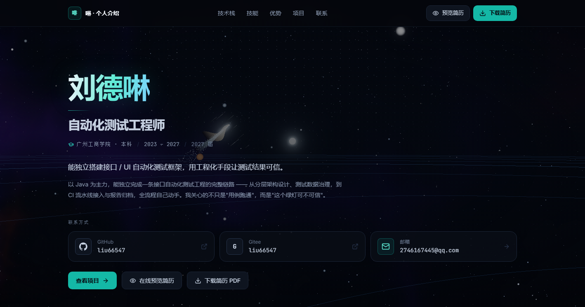
第一幕 · 太阳近景 —— 太阳在右侧，米粒组织与黑子可见，彗星从左侧飞过
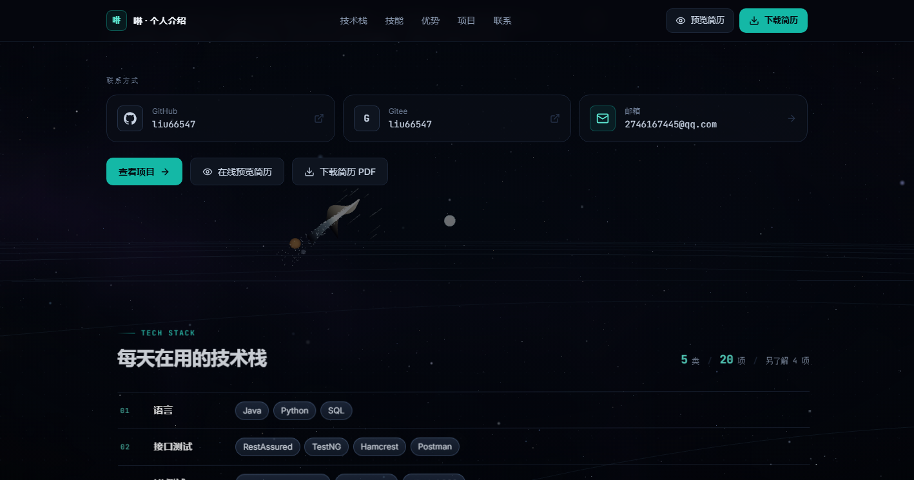
第一幕 · 开场文案完整呈现，远景有土星与轨道线
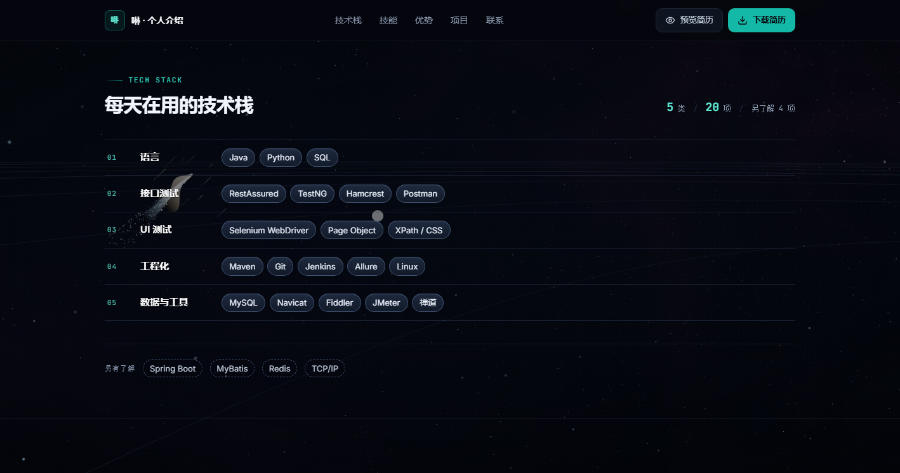
彗星开始向外飞行，太阳逐渐远离
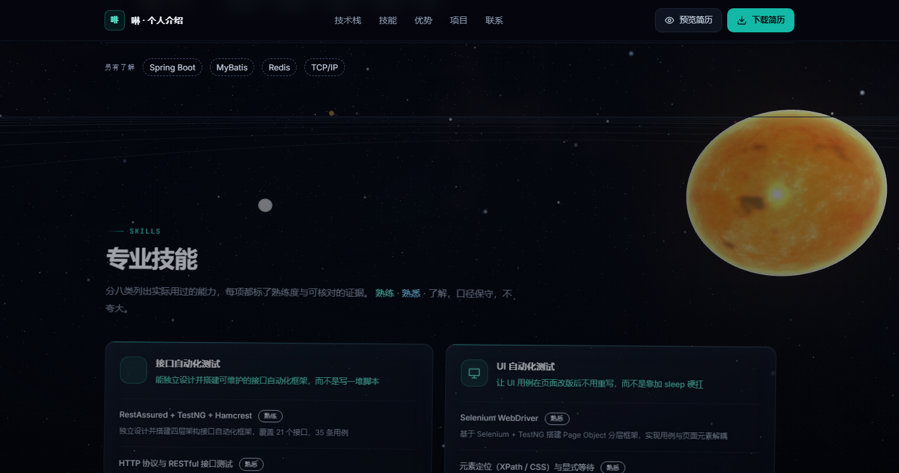
第二幕 · 视角转向地球，地球（NASA 实拍贴图）进入右侧画面
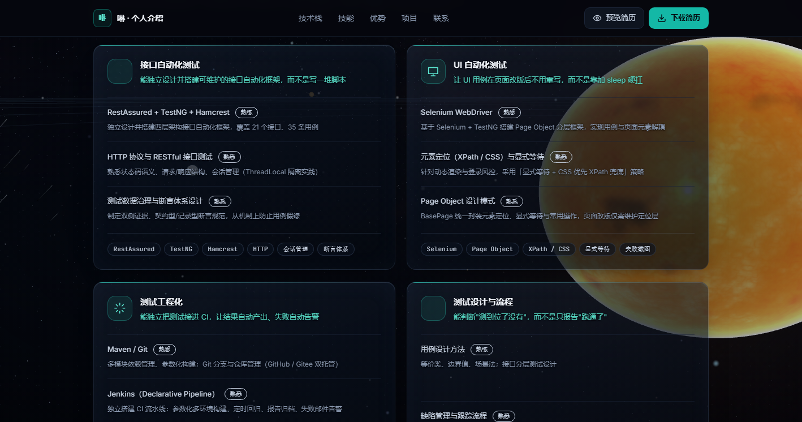
第二幕 · 地球与太阳同框，云层与海陆轮廓清晰
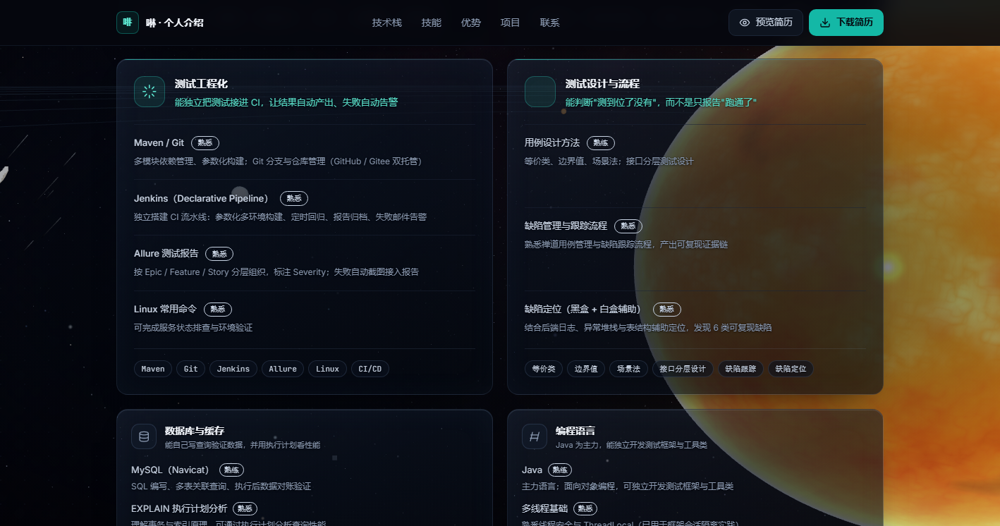
第二幕 · 地球继续右移，月球作为小天体伴随
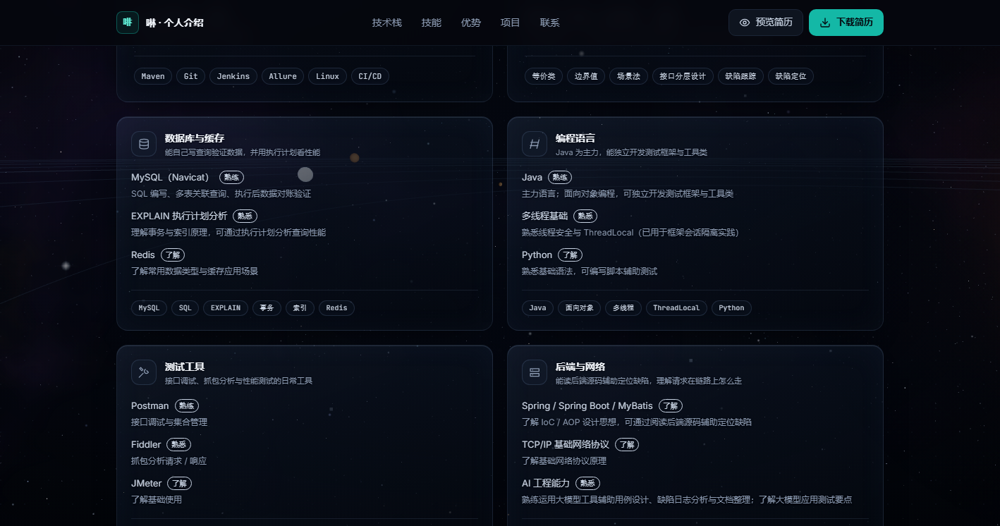
技能板块 · 玻璃拟态卡片（数据库与缓存 / 编程语言）
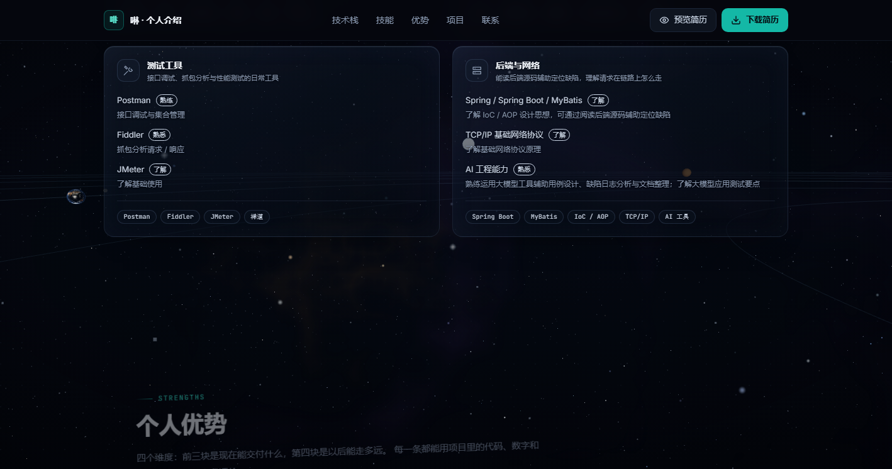
技能板块 · 玻璃卡片悬停态与背景天体互不干扰
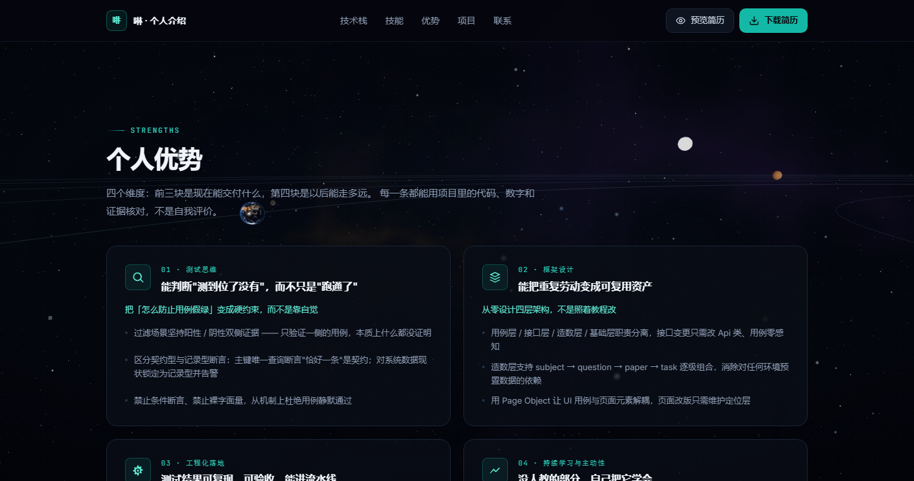
技能板块 · 测试工具 / 后端与网络
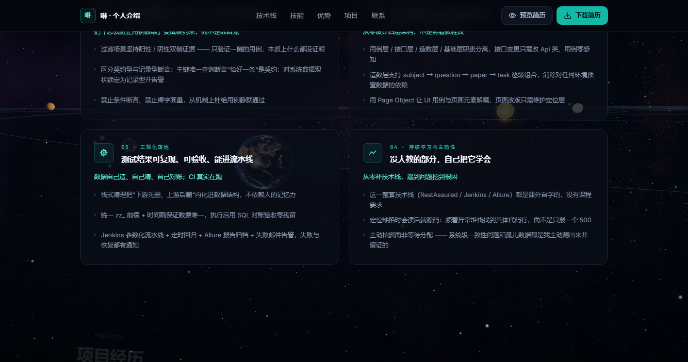
技能板块 · 测试设计与流程，背景已是深空星野
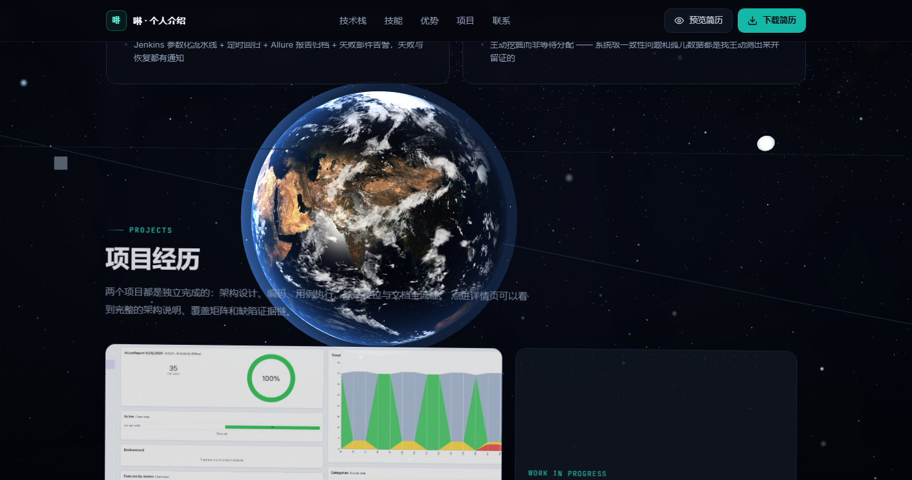
核心优势板块 · 卡片在星野之上，文字清晰
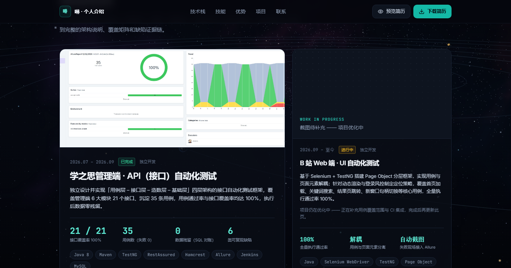
项目板块 · 项目卡片与截图
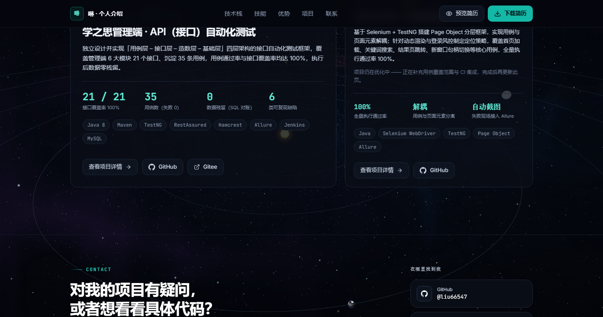
项目板块 · 第二组项目卡
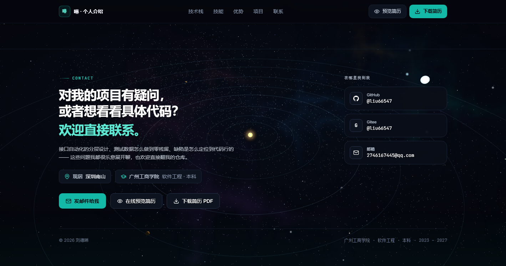
第三幕 · 页面底部：联系方式 + 倾斜的太阳系全景，彗星成为远处小点
移动端 · 首屏（无横向滚动条）
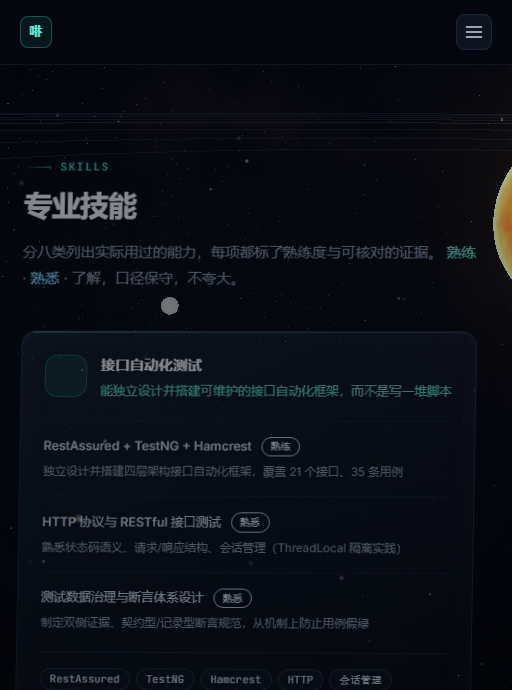
移动端 · 技能卡片单列铺满
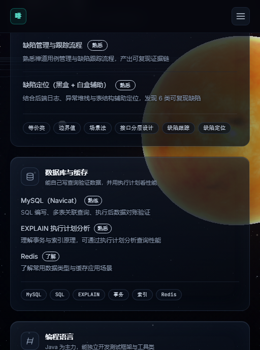
移动端 · 玻璃卡片在窄屏下依然有底色遮罩
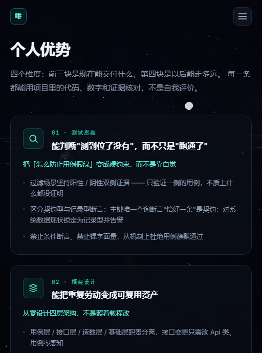
移动端 · 优势板块
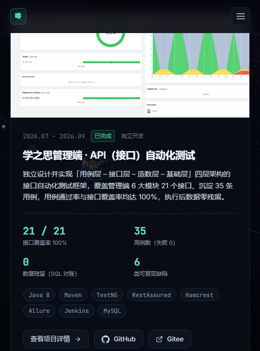
移动端 · 项目板块
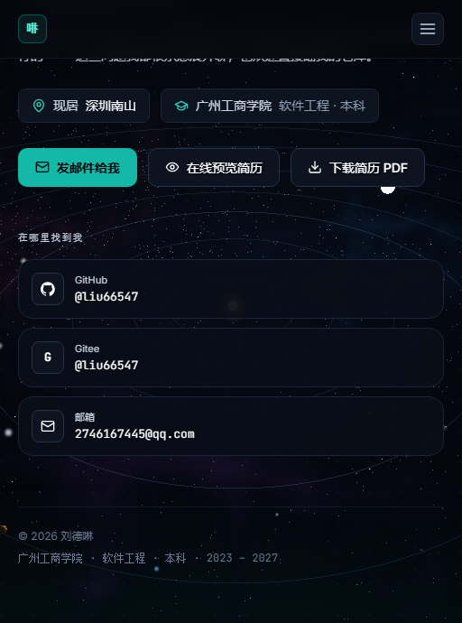
移动端 · 页脚与联系方式